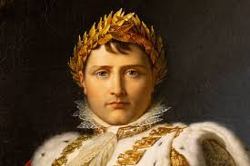
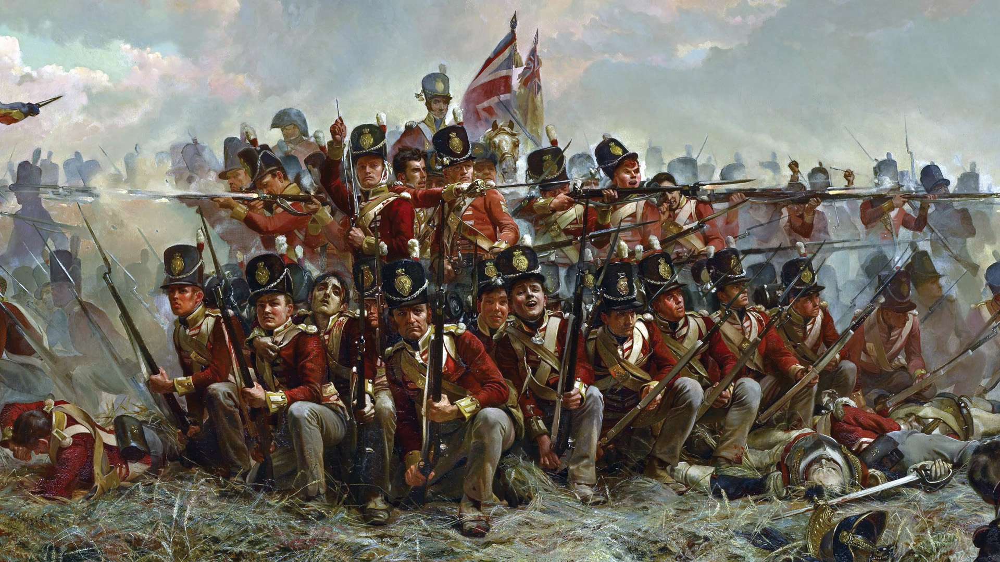
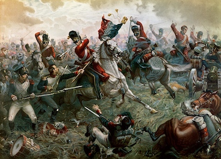
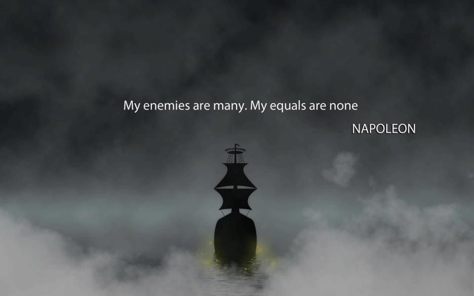

Early Life and Rise to Power

Napoleon Bonaparte was born in 1769 on the island of Corsica. He came from a minor noble family but was ambitious and excelled in military school. His military career began with rapid promotions during the French Revolution, and he soon became a household name due to his victories in Italy and Egypt.
In 1799, Napoleon led a coup d'état, overthrowing the Directory and establishing himself as First Consul, effectively becoming the ruler of France.
Consulate and Empire
Napoleon consolidated his power by implementing significant reforms, including the Napoleonic Code, which had a lasting impact on legal systems worldwide. He also expanded the French Empire across Europe, defeating Austria, Prussia, and Russia in a series of wars. In 1804, he declared himself Emperor of the French.
Napoleonic Wars and Decline
Napoleon's aggressive expansionism led to relentless conflicts known as the Napoleonic Wars. While he was victorious in many battles, his campaigns eventually drained France's resources. His invasion of Russia in 1812 was a catastrophic failure, leading to his abdication in 1814 and exile to Elba.
Return and Final Defeat
In 1815, Napoleon briefly returned to power during the Hundred Days but was ultimately defeated at the Battle of Waterloo. He was exiled to Saint Helena, where he died in 1821.
Legacy and Impact
Napoleon is remembered as one of history's greatest military geniuses, renowned for his tactical brilliance. His reforms transformed French society, and his conquests helped spread Enlightenment ideas throughout Europe. His impact on the political landscape and rise of nationalism shaped the future of the continent.